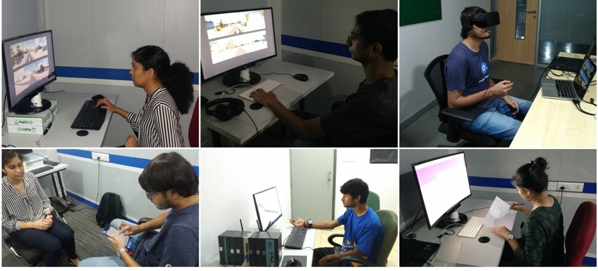

Welcome!
The Perception and Cognition Lab investigates the diverse determinants of human perception and thinking ability.
Our research, led by Priyanka Srivastava, is federally funded by the Cognitive Science Research Initiative, Department of Science and Technology (CSRI, DST), and the Institute of Nuclear Medicine and Allied Sciences, Defense Research and Development Organization (INMAS, DRDO). She primarily uses the experimental approach, which involves interaction with paper-pencil tests (e.g. Raven's progressive matrices, abstract thinking, and creative thinking test), computer-based tasks (e.g. stimulus-responsibility task), and virtual environment and/or virtual realitytasks (360 degree field of view). She employs survey, physiological monitoring and psychophysical methods to investigate the cognitive and non-cognitive mechanisms underlying creative thinking; and spatial representation and perception across sighted and visually impaired people.
Current Ongoing Projects:
-
Sight Without Light
Investigate the role of modality, spatial cues, spatial strategies, knowledge, cognitive load, experience, and stress, in navigational abilities across sighted and visually impaired population. -
Enhancing Vision
Evaluate the effect of 3600 display design on spatial local-area and spatial situational awareness. Further, develop the training methods to enhance the 3600 user-interaction. -
Creative Thinking and Reasoning
Investigate the cognitive mechanism underlies creative thinking and its relationship with knowledge, abstract thinking, and well vs. ill-defined problem solving ability.
Funding:
- DIPR, DRDO: July 2016 - March 2019
- CSRI, DST: April 2016 - March 2019